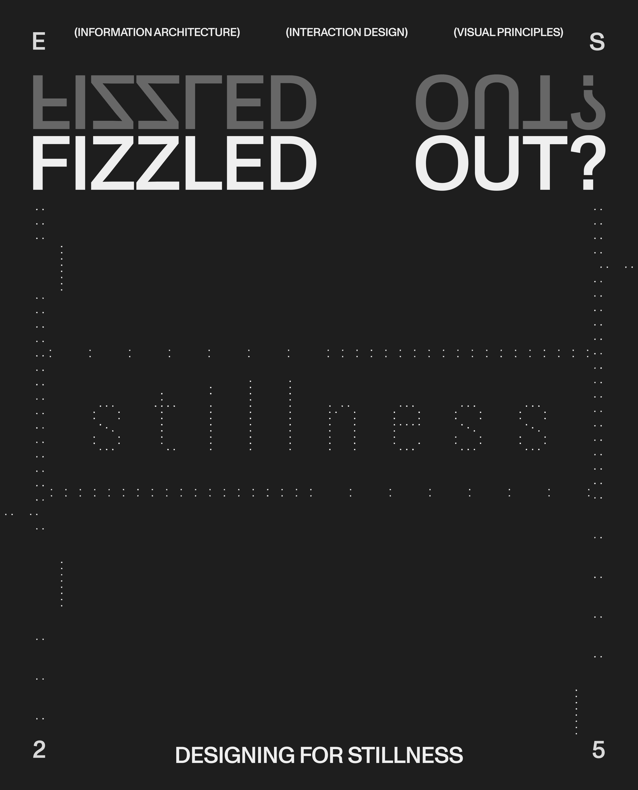
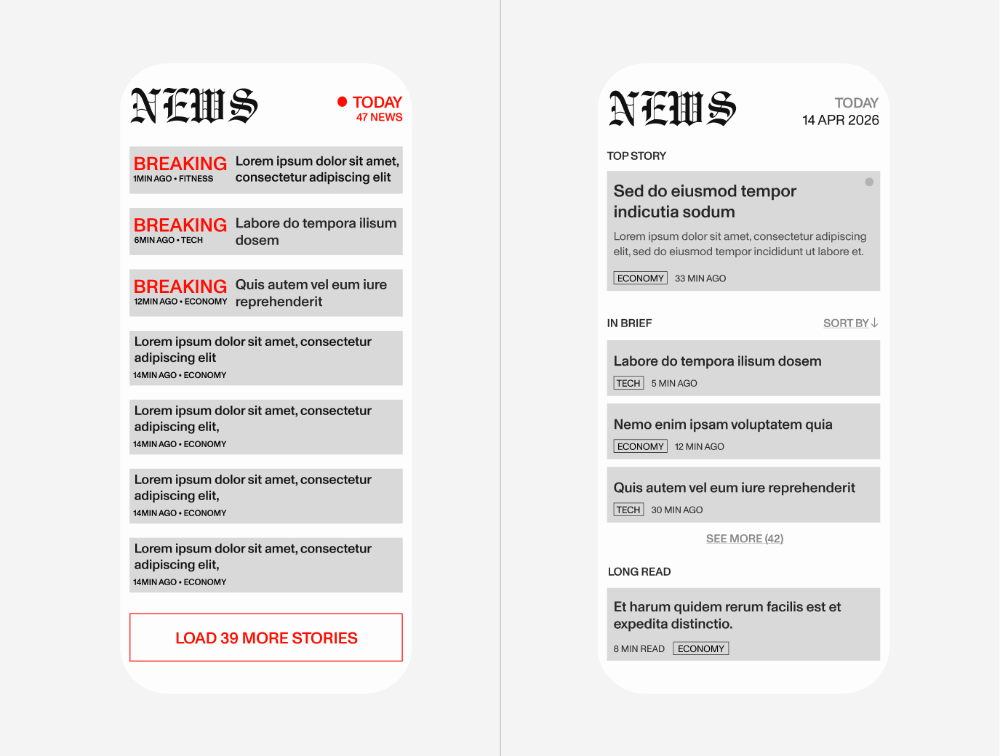
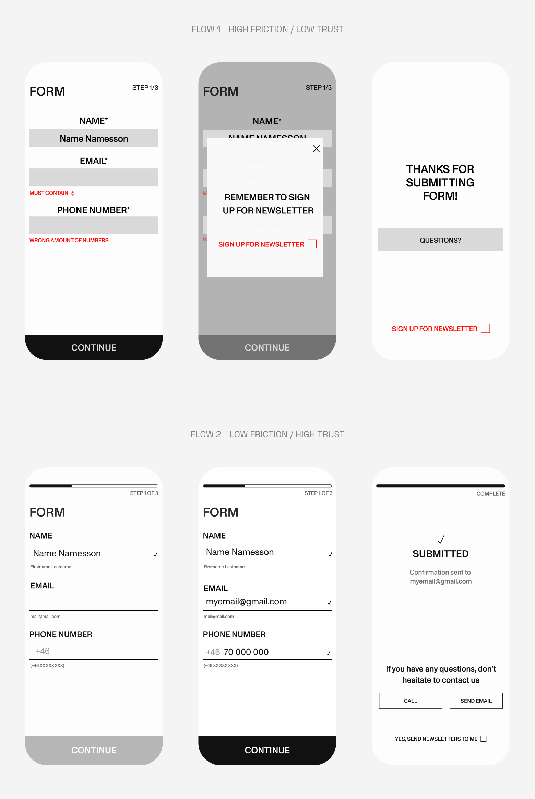
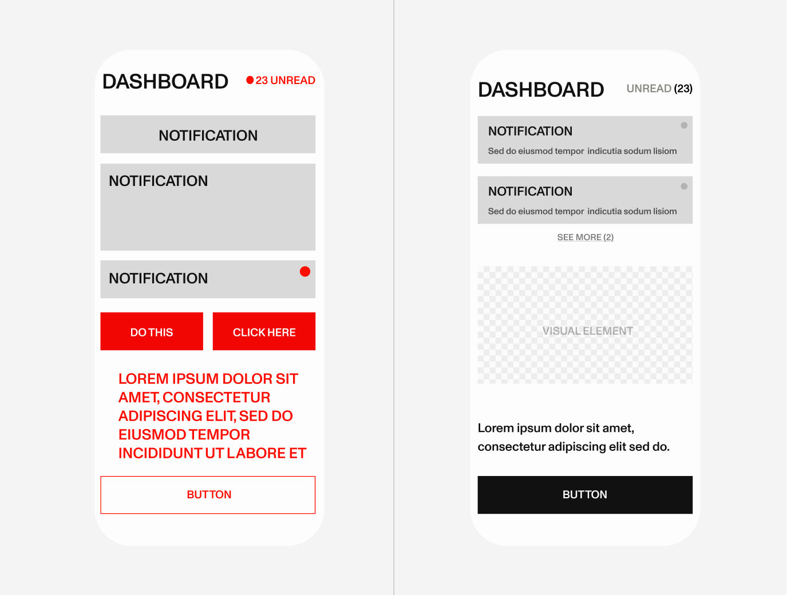

Stillness isn't empty - it's a design choice leaving room for discovery
Everything is accelerating, and stimulation has become the norm of digital life. Not necessarily because people want it, but because most systems are built for reaction and availability. Stillness is treated as something to avoid.
I'd argue the opposite. Stillness as a design choice isn't absence, it's structure that leaves space for the user to explore on their terms. A system designed for stillness holds up even when the user is distracted or tired, because it works with natural rhythms rather than against them.
What that looks like in practice unfolds across three layers: information architecture, interaction design and visuals. It's in these layers that the difference between an interface that works and one that doesn't becomes apparent.
Stillness begins in the structure. Before a user sees color or feels an interaction, the underlying hierarchy has already decided how overwhelming something is.
Presence by subtraction means only surfacing what's needed in the moment, keeping focus on what actually matters. Pause-friendly systems let users step away and return without losing their place. And when structure follows an organic logic, one that doesn't demand constant re-orientation, users can move through it without friction.

Interaction is where cognitive load accumulates most, and where design decisions is felt rather than seen.
Predictable patterns lower effort. When behavior is familiar, attention can rest. Feedback doesn't need to interrupt; subtle confirmation is usually enough. Limited flows, with clear beginnings and endings, restore a sense of control that endless scrolling removes. And systems can respond to drops in attention rather than pushing harder. Slowing down is sometimes the more considered move.

Space, color, type, and motion signal whether a system is demanding or supportive before a single word is read. It's the most immediate layer - and often the most felt.
Enough whitespace creates orientation; it signals what matters without filling every gap. Softer palettes reduce visual strain over time - high contrast has its place, but constant intensity is tiring. Typography sets pace: dense, tight fonts accelerate reading while open, broader ones slow it down. And motion should clarify, not compete. Organic transitions feel calmer than those fighting for attention.

Designing for stillness isn't about doing less - it's about being more considerate about what we ask of people.
Attention is limited. When everything demands it, nothing really gets it. When interfaces are clear, people make fewer errors. Quiet design includes more people - those who are tired, distracted, or managing complex lives alongside their screens.
Most digital products assume constant availability. Designing for stillness means letting the user move on their terms. In a world that keeps speeding up, that's the least we can do. Because no one's at their best when they're all fizzled out.